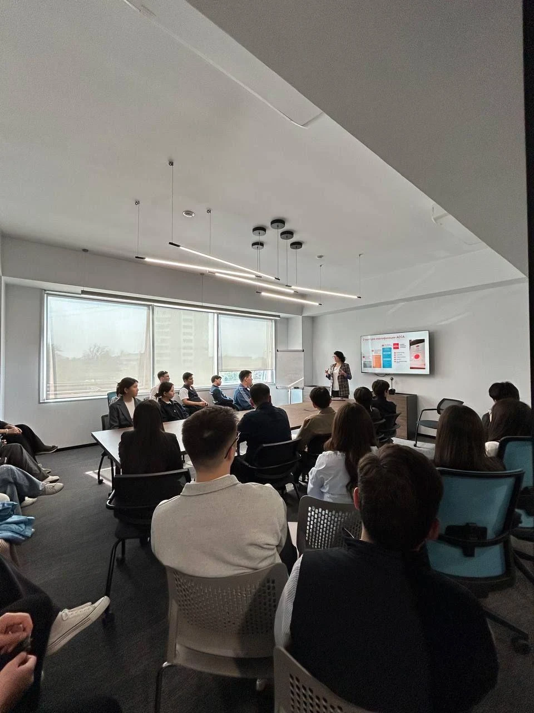

Admissions
Choose between JIHC’s main fields of IT and Accounting and Audit, then contact the college to check your next steps.

Your preparation checklist
Work through these five steps with a parent or guardian if you need help.
0 of 5 steps checked
Saved on this browser. This checklist is for your own preparation, not an application.
-
Choose a field
Compare IT and Accounting and Audit, then note which field you want to ask JIHC about.
-
Confirm eligibility and intake availability
Call +7 (707) 802-00-88 or email info@jihc.edu.kz with your chosen field and educational background. Ask whether you are eligible and whether that field is open for the current intake.
-
Request the official document checklist
Ask JIHC to send or direct you to the current checklist, including any format or certification details.
-
Prepare the requested documents
Use the checklist from JIHC to gather the items it requests. Contact the college if any item or instruction is unclear.
-
Follow the official submission instructions
Submit your materials using the method and instructions JIHC confirms. Ask how to check that they were received.
Questions before applying
For admissions questions, call +7 (707) 802-00-88 or email info@jihc.edu.kz.
How do I check whether I can apply?
Share your educational background and chosen field, then ask which eligibility criteria apply to you.
Where can I get application dates?
Ask for the current application dates and whether applications are open for your chosen field.
How do I get the document checklist?
Request the official checklist and clarify any format or verification instructions you need to follow.
What should I ask about costs?
Ask about current fees, payment timing and methods, and any other costs to plan for.
How do I check which fields are open?
JIHC’s two main fields are IT and Accounting and Audit. Ask which fields are open for the intake you are considering.
Ask about your next steps
Share your chosen field and educational background. Ask about eligibility, intake availability and the official document checklist.